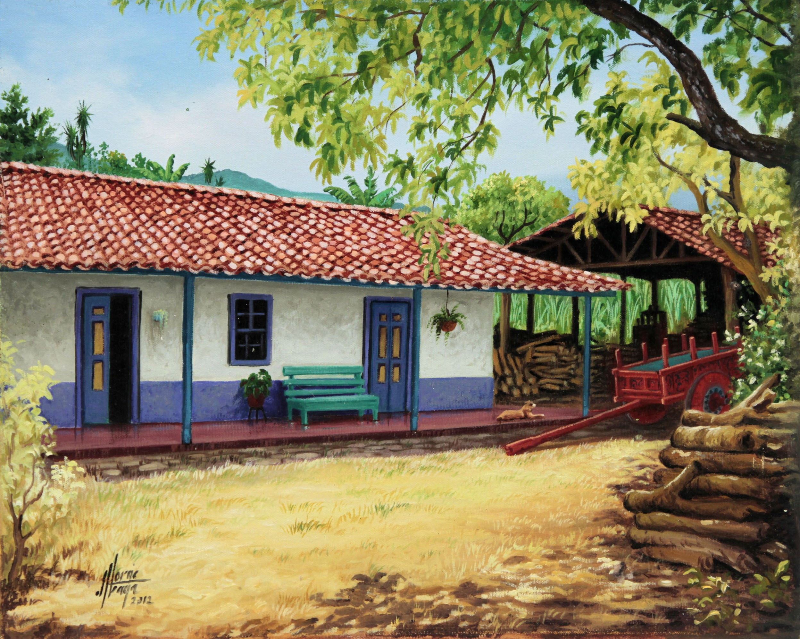
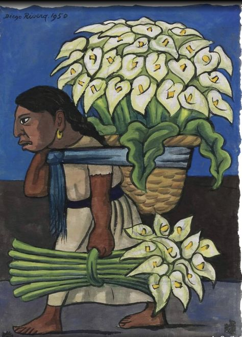
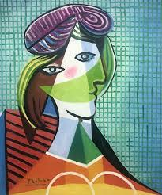
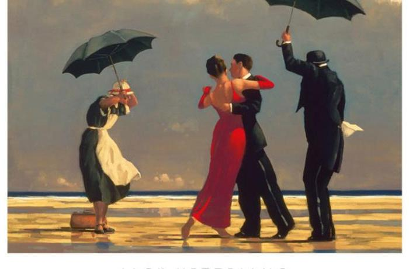
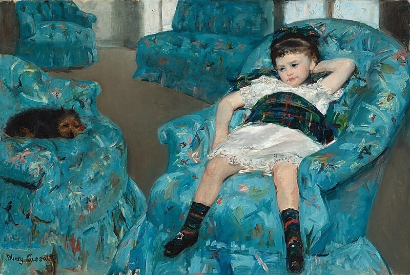
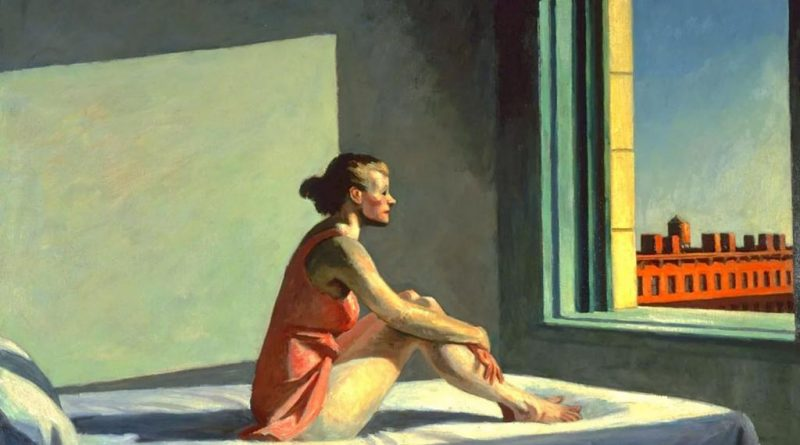
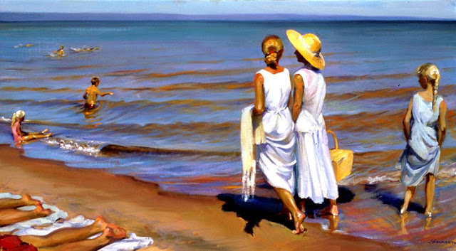
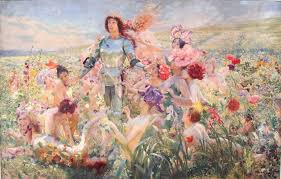
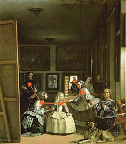

Cada ciudad puede ser otra cuando el amor la transfigura cada ciudad puede ser tantas como amorosos la recorren el amor pasa por los parques casi sin verlos amándolos entre la fiesta de los pájaros y la homilía de los pinos cada ciudad puede ser otra cuando el amor pinta los muros y de los rostros que atardecen uno es el rostro del amor y el amor viene y va y regresa y la ciudad es el testigo de sus abrazos y crepúsculos de sus bonanzas y aguaceros y si el amor se va y no vuelve la ciudad carga con su otoño ya que le quedan sólo el duelo y las estatuas del amor.

“El conocimiento de uno mismo puede matar al dragón del miedo y de la duda”

“Ponemos barreras para protegernos de quienes creemos que somos. Luego un día quedamos atrapados tras las barreras y ya no podemos salir”.

"Casi muero por todas las lágrimas que no derramé"

Te dejo con tu vida tu trabajo tu gente con tus puestas de sol y tus amaneceres. Sembrando tu confianza te dejo junto al mundo derrotando imposibles segura sin seguro. Te dejo frente al mar descifrándote sola sin mi pregunta a ciegas sin mi respuesta rota.

«Aunque este Universo poseo, nada poseo, pues no puedo conocer lo desconocido si me aferro a lo conocido»

Cuerpo de mujer, blancas colinas, muslos blancos, te pareces al mundo en tu actitud de entrega. Mi cuerpo de labriego salvaje te socava y hace saltar el hijo del fondo de la tierra. Fui solo como un túnel. De mí huían los pájaros y en mí la noche entraba su invasión poderosa. Para sobrevivirme te forjé como un arma, como una flecha en mi arco, como una piedra en mi honda. Pero cae la hora de la venganza, y te amo. Cuerpo de piel, de musgo, de leche ávida y firme. Ah los vasos del pecho! Ah los ojos de ausencia! Ah las rosas del pubis! Ah tu voz lenta y triste! Cuerpo de mujer mía, persistiré en tu gracia. Mi sed, mi ansia sin límite, mi camino indeciso! Oscuros cauces donde la sed eterna sigue, y la fatiga sigue, y el dolor infinito.

No te rindas, aun estas a tiempo de alcanzar y comenzar de nuevo, aceptar tus sombras, enterrar tus miedos, liberar el lastre, retomar el vuelo. No te rindas que la vida es eso, continuar el viaje, perseguir tus sueños, destrabar el tiempo, correr los escombros y destapar el cielo. No te rindas, por favor no cedas, aunque el frio queme, aunque el miedo muerda, aunque el sol se esconda y se calle el viento, aun hay fuego en tu alma, aun hay vida en tus sueños, porque la vida es tuya y tuyo tambien el deseo, porque lo has querido y porque te quiero. Porque existe el vino y el amor, es cierto, porque no hay heridas que no cure el tiempo, abrir las puertas quitar los cerrojos, abandonar las murallas que te protegieron.

"Una persona no puede correr y aprender a la vez, debe permanecer en un lugar durante un tiempo